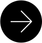

WINDSOR SCALE
SUSCRIPCIÓN / 2026
WINDSOR SCALE
SUSCRIPCIÓN / 2026
El sistema no se detiene.
Las agencias tradicionales construyen, entregan y se van. Windsor Scale es nuestro modelo de suscripción mensual para empresas que no pueden permitirse el lujo de estancarse.
Explorar01
EL PROBLEMA DEL ABANDONO
Entregar un proyecto es solo el principio.
El mercado cambia, los algoritmos se actualizan, los usuarios evolucionan y la seguridad se vuelve obsoleta. Quedarse quieto es retroceder.
Windsor Scale es un modelo de suscripción exclusivo. No cobramos por "horas de trabajo", cobramos por mantener tu sistema operando al máximo rendimiento. Es tu departamento de tecnología y diseño, sin la carga de contratar personal.
02
NIVELES DE OPERACIÓN
Elegí tu nivel de escalabilidad.
Diseñamos tres niveles de suscripción adaptados al tamaño y la ambición de tu empresa.
Vigilancia
Para empresas que necesitan que su sitio web o aplicación funcione sin fallos, esté seguro y actualizado.
- Monitoreo de caídas 24/7
- Backups de seguridad semanales
- Actualización de dependencias y parches
- Soporte técnico prioritario (48hs)
Optimización
Para empresas que ya tienen tráfico y necesitan mejorar sus tasas de conversión y experiencia de usuario.
- Monitoreo de caídas 24/7
- Backups de seguridad semanales
- Actualización de dependencias y parches
- Soporte técnico prioritario (24hs)
- Auditoría UX/UI mensual
- Tests A/B en landing pages
- Optimización de velocidad y SEO técnico
Vanguardia
Para proyectos ambiciosos que necesitan desarrollo continuo e integración de nuevas tecnologías.
- Monitoreo de caídas 24/7
- Backups de seguridad semanales
- Actualización de dependencias y parches
- Soporte técnico dedicado (tiempo real)
- Auditoría UX/UI mensual
- Tests A/B en landing pages
- Optimización de velocidad y SEO técnico
- Desarrollo de nuevas funcionalidades
- Integración de soluciones con IA
- Estrategia de producto continua
03
EL CICLO SCALE
Un ciclo que nunca se detiene.
Nuestro método de suscripción no es reactivo, es proactivo. Siempre estamos un paso adelante.
Auditar
Al inicio de cada mes, analizamos métricas, velocidad, seguridad y comportamiento del usuario.

Priorizar
Identificamos los cuellos de botella y definimos las mejoras de mayor impacto para ese mes.
Ejecutar
Nuestro equipo técnico aplica las mejoras, parches y desarrollos sin interrumpir tu operación.
Reportar
Recibes un dashboard con el detalle de lo realizado y los resultados obtenidos en el mes.
¿Tu sistema necesita escalar?
Agenda una auditoría inicial con nuestro equipo. Evaluaremos el estado actual de tu producto digital y te recomendaremos el nivel de suscripción adecuado.
Solicitar Diagnóstico